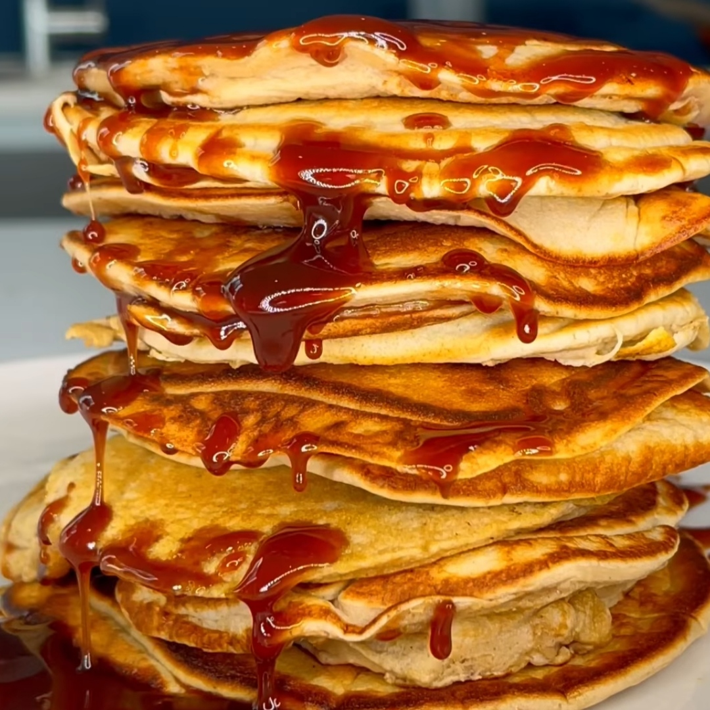

Fluffy pancakes

HIGH PROTEIN MEAL PREP FLUFFY PANCAKES.
(220 Cals, 22g Protein, 9g Fat, 12g Carbs per meal).
Store in the fridge up to 3 days or Keep it frozen in the freezer & reheat using a toaster.
The ingredients used in this is to make one big meal prep to then portion equally into 5 servings‼
Ingredients
- 6 large eggs
- 90g Protein powder/flavour of your choice
- Teaspoon of baking powder
- 200g Banana
Steps
- Blend all your ingredients together.
- Add equal portions of batter onto the pan and cook for 2-3 mins on medium heat‼
- Should make roughly 15 Pancakes.
- Portion the servings equally based on how many pancakes you make‼
- Use baking paper to separate pancakes so its easy to compartmentalise when storing in the freezer or fridge.
- Add optional low cal chocolate sauce when reheated or toppings of choice‼
If you cannot follow the directions or you just want to see the video cooked I have supplied a link
to the Chefs Instagram page below.
Give him a follow if you use Instagram.
I hope you enjoyed this Recipe
Back to Recipes page